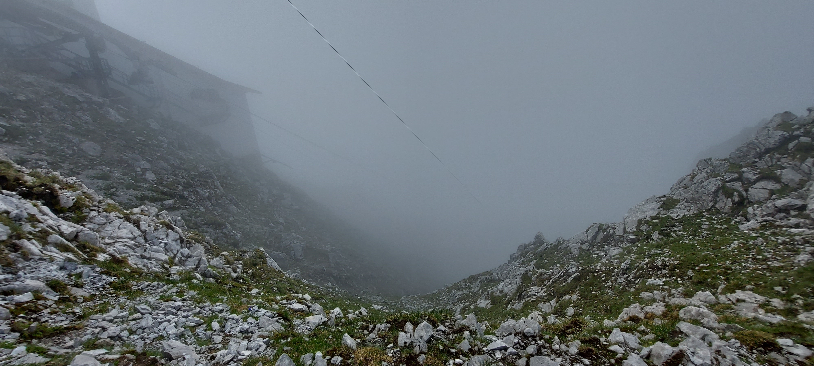
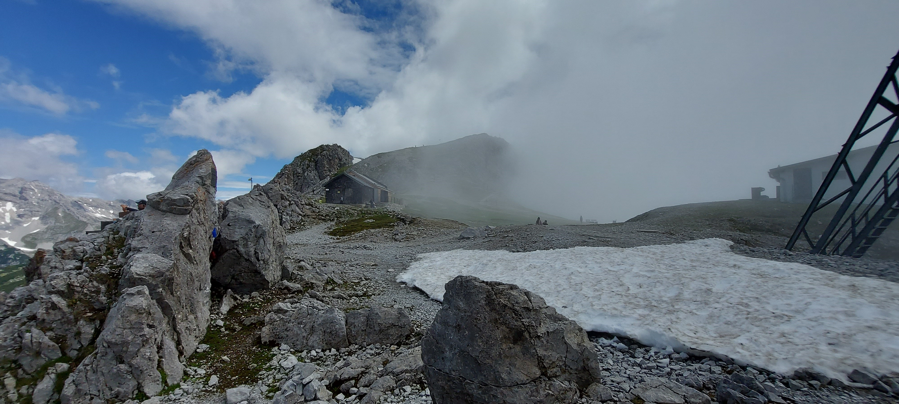
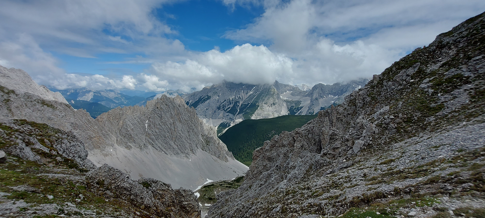
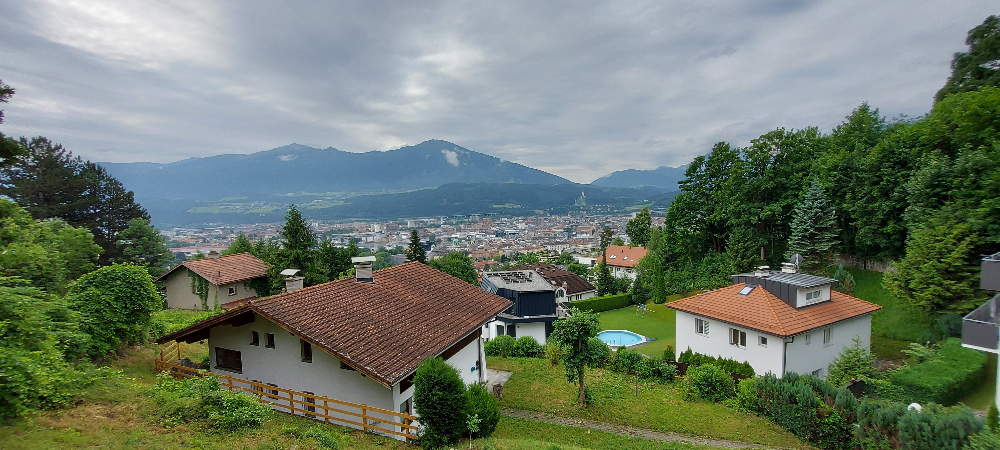
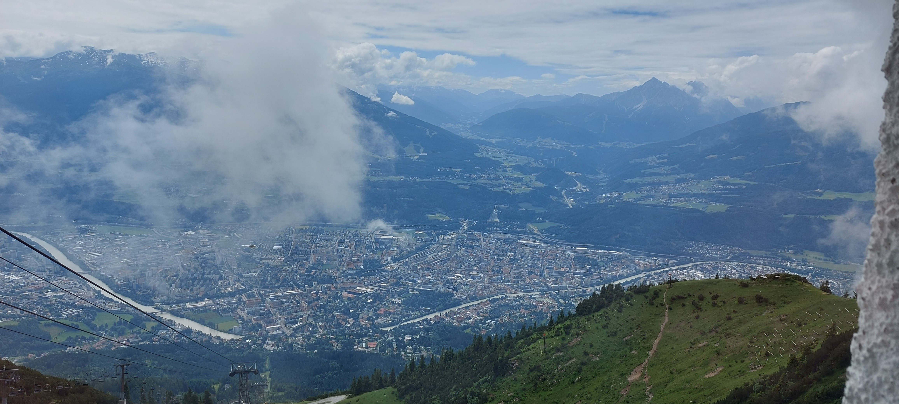
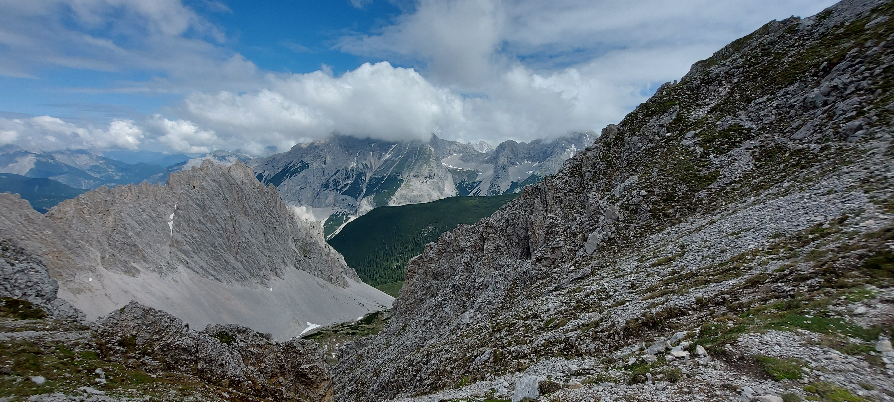
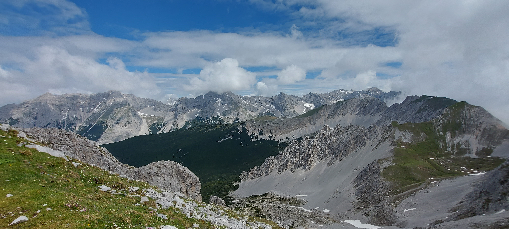
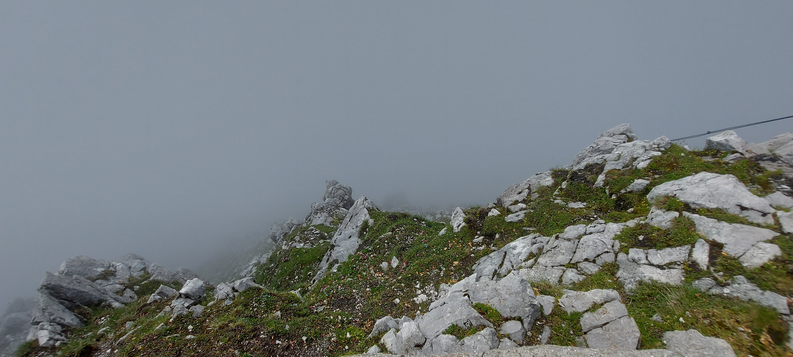
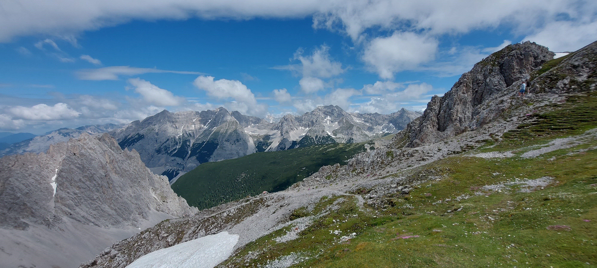
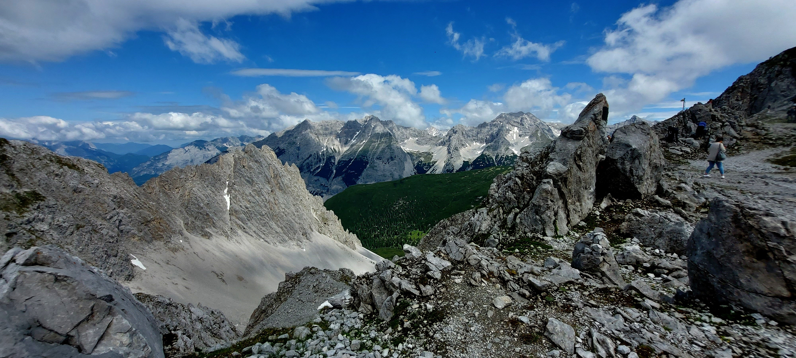

Mlčení hor
Tenhle výběr fotek není cestopis. Je to zastavení. Hory mluví, i když mlčí – a právě to ticho tě donutí poslouchat. Pálí tě stehna, funíš, potíš se. A pak přijde chvíle, kdy se zvedneš od kamene, podíváš se kolem a zjistíš, že tvoje hlava je lehčí. Ne proto, že by problémy zmizely. Ale proto, že vedle těchto hřebenů už nevypadají tak velké. Mlčení hor je lekce: nemusíš pořád mluvit, vysvětlovat nebo dokazovat. Někdy stačí jen jít a být.
Nejde o to, kde stojíš. Ale co v tobě zůstane, když tam chvíli jsi.










Když zmlkne svět kolem, uslyšíš vlastní trasu.